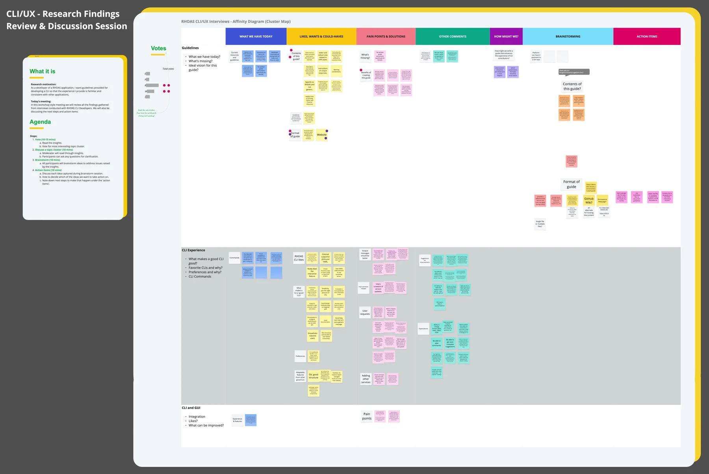
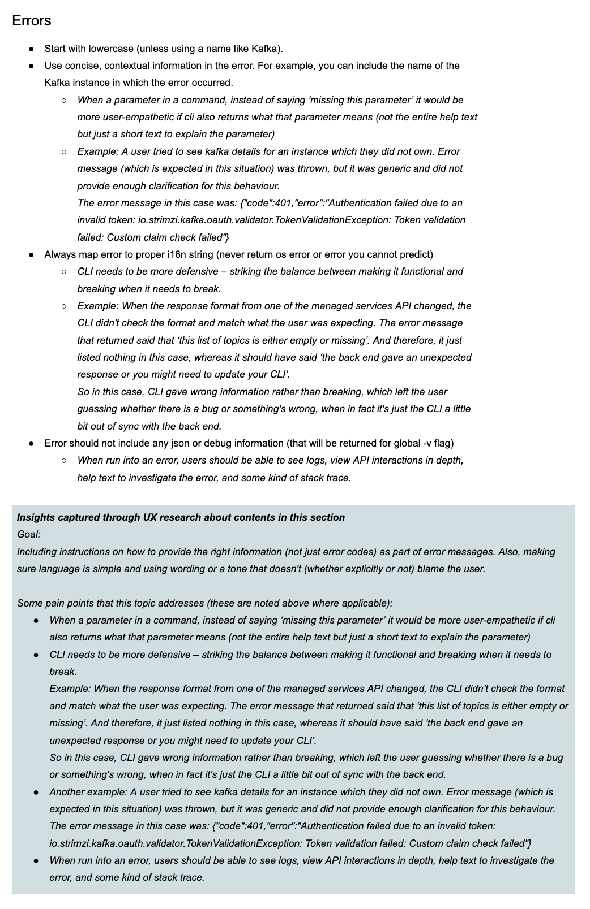
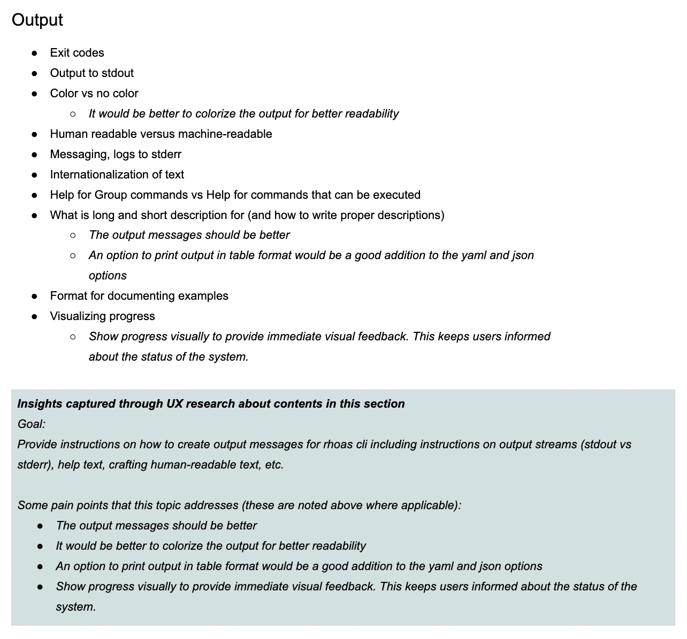
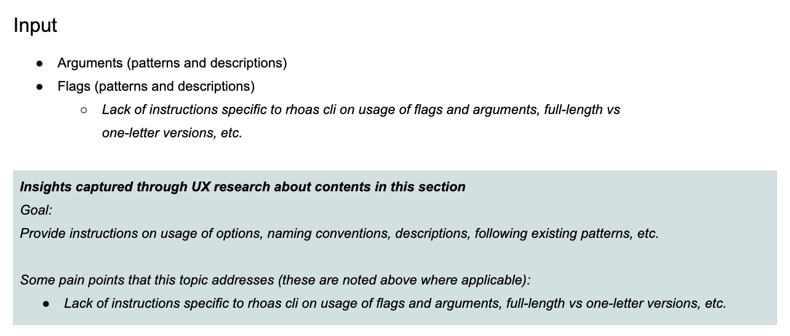

Building a foundation for better CLI experiences
As more services joined Red Hat OpenShift Application Services, teams needed a consistent way to design the CLI experience. I led an initiative to establish a shared UX foundation for the RHOAS CLI, translating developer interview insights and established command-line conventions into practical guidelines for engineering teams. The work helped establish a common approach to creating consistent, predictable CLI experiences across services, for both developers and automation.
- My role
- UX Lead
- Team
- 1 Principal Designer, 2 Engineers, and me, with additional developers participating in research and workshops
- Timeline
- 2 months
- Product
- Red Hat OpenShift Application Services (RHOAS)
- Tools used
- Google Docs, Miro
The challenge
As more services became available through RHOAS, different engineering teams needed to make decisions about command structures, flags, output, errors, and interaction behavior. Without shared guidance, those decisions could become inconsistent, making the CLI harder to learn, use, and extend.
My contribution
I led the UX initiative, researched established CLI tools and command patterns, interviewed developers, facilitated a cross-functional workshop to prioritize opportunities, and translated the findings into practical, research-backed CLI guidelines for engineering teams.
What shipped
The work produced a research-backed guideline framework that gave teams a shared reference for making CLI decisions. Subsequent releases included improvements in several areas the guidelines addressed, helping make commands clearer, behavior more consistent, and the CLI more useful for both developers and automation.


Kickoff: make each CLI feel like part of one product
Red Hat OpenShift Application Services (RHOAS) brought together cloud services that developers could manage through a command-line interface (CLI). Unlike a graphical interface, the CLI has no traditional screens or visual controls. Instead, command names, arguments, flags, output formatting, and error messages collectively shape the user experience.
As engineering teams developed and extended these services, they had to make decisions about how developers would interact with them: how commands were organized, how flags were named, what output looked like, and how errors were communicated. Without shared guidance, each team could make its own decisions about command structure, naming, flags, output, and errors. Therefore, a command that worked one way in one service might follow a different structure or use different terminology in another. Those choices might make sense in isolation, but they would create a fragmented experience for developers working or moving across services.
A command's structure or flag name isn't just a presentation choice. Once developers begin using commands in scripts, automation, and documentation, changing those conventions can disrupt existing workflows. This created a challenge for the teams building the CLI. Developers needed a reliable way to make UX decisions without having to reinvent patterns or debate the same conventions for every new command.
This made it important to establish expectations before different teams introduced their own patterns. CLI contributors needed a reliable way to decide how commands should be organized, what flags should be called, how output should behave, and what errors should communicate.
“How could we help every team building a RHOAS CLI deliver an experience that felt familiar and consistent with the rest of the platform?”
So, the goal was to help teams building RHOAS applications create a CLI experience that felt familiar and consistent with other applications on the platform. My task was to turn that goal into practical UX guidelines grounded in developer feedback and established CLI conventions. The guidelines needed to define what should be shared across applications without restricting the commands and workflows unique to each service.
Looking beyond syntax to understand the whole experience
I began by reviewing the existing RHOAS CLI, internal support feedback, and discussions in developer message groups. I also studied established command-line tools and guidelines, including kubectl, GitHub CLI, Heroku, Confluent, Google Cloud CLI, and clig.dev. My background in computer science and engineering came in handy here. I was already familiar with command-line concepts, which made it easier to understand the syntax, follow technical discussions, and investigate how different tools handled arguments, flags, output, errors, and automation. I could look beyond how a command was written to understand why it behaved a certain way and what that meant for developers using it.
I compared these tools to identify familiar conventions and opportunities to make the RHOAS experience more predictable and intuitive. I also interviewed five developers with experience building or using the CLI, which helped me understand where existing behaviors caused frustration, which patterns they valued, and what guidance would help contributors make better decisions.
A visual landscape of CLI patterns

Organizing the research
The interviews and competitive research produced a wide range of observations. Some were about specific commands or flags, while others concerned larger workflow problems, documentation, or the relationship between the CLI and the web interface. I organized the findings into an affinity map in Miro, grouping related observations so we could discuss patterns rather than individual comments. I structured the board around three main areas:
Guidelines and contribution practices: How CLI standards were documented, enforced, and communicated to contributors.
The CLI experience itself: Command syntax, flags, output, errors, authentication, interactivity, and other usability concerns.
The relationship between CLI and GUI: How developers moved between the command line and graphical interface, and where the two experiences behaved differently.
Within these areas, I separated observations about the current experience, things developers valued or wanted, and pain points or possible improvements. This distinction mattered because the research included more than complaints. Developers also described existing CLI behaviors they appreciated, such as interactive commands, configuration support, and readable JSON or YAML output. Those positive examples helped us understand what was already working and worth preserving.
The affinity map became a shared reference for the next stage of the project. It helped make technical interview findings easier for the broader team to review and gave our workshop a clearer starting point.
Research synthesis and workshop


EnlargeThe details that make a CLI feel predictable
Several recurring themes emerged from the interviews and the affinity map. They showed that a consistent CLI required more than using the same naming conventions.
1. Command structure and flags should feel familiar
Developers valued CLIs that were intuitive enough to use without constantly referring to documentation. Consistency across commands and flags reduced the amount of information they had to remember. The RHOAS CLI already used a resource-first command structure, such as rhoas kafka create. This followed a recognizable pattern in which developers identified the resource before the action. The research helped reinforce the value of maintaining that convention as new services were added.
We also discussed how flags affected usability. For example, requesting JSON output using -o json was supported, but a participant questioned whether a direct --json flag would be more convenient. Another concern was that valid values could be difficult to discover when shell autocompletion wasn't available. These observations illustrated a broader need: contributors required guidance not only on naming conventions, but on how to make commands discoverable and predictable.
2. The CLI needed to work for both people and automation
Participants appreciated the RHOAS CLI's interactive features because they could guide someone through a task without requiring every option to be remembered. At the same time, scriptability was especially important. A command might be run manually by a developer or as part of an automated workflow. Interactive prompts could be useful for the first situation but disruptive in the second. Output formatting, exit behavior, and the ability to pipe results into other commands also affected how reliably the CLI could be automated.
Developers wanted control over output formats such as JSON, YAML, and tables. They also valued the ability to use standard UNIX pipes, which made the distinction between standard output (stdout) and standard error (stderr) important. The research reinforced that interactive and scriptable experiences weren't competing goals. The CLI needed predictable behavior for automation while offering guidance where it helped people work more efficiently.
3. Error messages needed to help developers recover
Error handling emerged as an important source of frustration. Developers described messages that were technically related to a problem but didn't explain what the user should do next. One example involved a message saying that no services were currently being used, even when a Kafka instance already existed through the graphical interface. The missing context was that the CLI needed to be pointed to the relevant instance. A more useful message could guide the developer toward commands such as rhoas kafka list or rhoas kafka use.
Participants also mentioned confusing authentication behavior, insufficient debugging information, and errors that weren't specific enough to help diagnose service issues. These weren't simply writing problems. A useful error depended on understanding what the command was trying to do, what had failed, and what information would help the developer recover.
4. Long-running operations and changing state needed clearer feedback
Not every CLI action finished immediately. Creating a Kafka instance, for example, could start an asynchronous operation, leaving the developer to check when the resource was ready. Participants discussed the value of a wait option that could keep checking the resource's status until creation completed. They also wanted clearer progress feedback for background operations.
Related problems appeared when the CLI couldn't interpret a service response or when backend state didn't match what the command expected. Showing an empty result in such situations could mislead someone into thinking no resources existed. This highlighted the importance of communicating system state accurately, especially when a command's output could influence what a developer did next.
5. The CLI and GUI didn't always feel connected
Developers often preferred the CLI because it let them move quickly without navigating through several screens. But some tasks required moving between the terminal and the graphical interface, making consistency between the two important. One example involved creating a Kafka instance in the GUI and then needing to select or configure it separately in the CLI. Participants wanted a smoother connection between the two experiences.
There were also requests for feature parity, more convenient configuration export, and ways to open relevant output in the web interface. These findings helped broaden the discussion from individual command usability to the larger workflows developers were trying to complete.
Turning a collection of findings into shared priorities
The affinity map contained many opportunities, but we needed to decide which ones mattered most and what actions the team could realistically take. I facilitated a workshop with the two main CLI contributors, my UX team's Principal Designer, and two other developers from the product team. Rather than presenting a finished set of recommendations, I wanted the group to work through the evidence together and use it to shape the guidelines.
I structured the session into four activities:
Review and vote on findings. Participants read the insights and selected the topic clusters they felt were most important or interesting.
Discuss the selected clusters. I moderated the conversation, reading through relevant observations and inviting questions or clarification.
Brainstorm possible solutions. We explored ways to address the problems raised by the research.
Agree on action items. Participants discussed the ideas, voted on priorities, and identified next steps.
This approach helped us move from individual developer feedback to decisions the contributors could support.
Research synthesis and workshop
EnlargeThe discussion revealed that documentation was part of the UX problem
One important workshop topic was the absence of written, RHOAS-specific CLI guidelines. The team already had technical mechanisms for enforcing certain standards through a linting profile. But those rules weren't the same as accessible guidance explaining what contributors should do and why. Developers could discover violations through validation, yet still need to investigate the convention behind a rule. New contributors might have to research command-line standards independently or rely on discussions with more experienced team members.
The group saw value in documenting expectations upfront, especially for decisions that would be difficult to change after commands were introduced. We discussed several requirements for the guidelines:
- Build on established conventions. Use clig.dev and other respected CLI references rather than inventing a completely separate standard.
- Include RHOAS-specific rules. Explain where product conventions differed from general CLI guidance.
- Connect guidance to validation. Make the written recommendations consistent with rules already enforced in the codebase.
- Help contributors make decisions. Include examples for commands, arguments, flags, output, and error behavior rather than relying on abstract principles.
- Make guidance easy to encounter. Link to it from contribution and onboarding workflows so developers could find it when they needed it.
These discussions helped clarify that the value of the guidelines wasn't just in standardizing the finished CLI. They could also make the process of building new commands more efficient and predictable.
Building a shared framework for CLI decisions
I used the research and workshop findings to structure the guidelines, drawing on clig.dev while accounting for conventions and challenges specific to RHOAS. The framework needed to strike a balance—we wanted a consistent experience across services, but not every service worked with the same resources or supported the same operations. A rigid collection of rules could become an obstacle if it didn't leave room for legitimate differences. I organized the guidance around six areas that reflected the decisions contributors regularly encountered.
1. Command structure and discoverability
The guidelines defined expectations for command hierarchy, naming, discoverability, and help text. Common actions such as creating, listing, describing, and deleting resources should use recognizable conventions, helping developers transfer what they'd learned from one service to another. We also discussed the importance of useful command descriptions and examples. The CLI should not depend entirely on external documentation for someone to understand what an available command does.
2. Arguments and flags
Arguments and flags are part of how a developer interacts with a command, so their names and behavior should be deliberate. The guidelines addressed naming, short and long forms, descriptions, required inputs, and how values should be supplied. They were also intended to help contributors decide when information belonged in an argument versus a flag. This mattered because command options can become part of scripts and automation. An inconsistent or confusing choice may be difficult to correct later without affecting existing users.
3. Output
The output guidelines considered both readability and machine consumption. For someone working in a terminal, a well-structured table might make resource status easy to scan. For a script, JSON or YAML output could be more useful. The CLI needed consistent expectations for output formats, standard output, standard error, and other feedback. I wanted the guidance to account for what developers did with the results after running a command, not just whether the command successfully produced information.
4. Errors
The error guidelines focused on communicating what happened and helping people understand what they could do next. An ordinary error message should be concise, contextual, and useful without requiring the developer to interpret raw API responses. When additional diagnostic information was needed, verbose output could provide more technical detail. The research examples helped connect these principles to actual problems, including missing context, unclear authentication messages, and confusing responses when a resource couldn't be accessed.
5. Interactivity
The guidelines addressed when guided prompts could help and when commands needed to remain non-interactive. Interactive experiences can make a CLI more approachable, particularly when a task requires several pieces of information. But developers also need to run commands in scripts, where prompts can interrupt execution. The goal was to help teams make these decisions according to the task while preserving predictable, scriptable behavior.
6. Robustness
The final area focused on validation, unexpected responses, and how the CLI communicated failures. A command should not imply that an operation succeeded when the CLI couldn't interpret the result. Similarly, unexpected backend behavior should produce useful feedback rather than misleading information. This was particularly relevant for a CLI that depended on services and APIs which could change over time.
Making the guidelines useful during implementation
I didn't want the guidelines to become a collection of abstract UX principles that contributors would read once and then set aside. For each major topic, I structured the guidance around four questions:
Recommendation: What convention should contributors follow?
Rationale: Why does this matter for the user or the wider platform?
Example: What does the recommendation look like in a command, response, or interaction?
Trade-offs: When might another approach be appropriate?
This structure was important because CLI decisions often involved technical context. A convention could be useful in most situations without being appropriate for every service-specific workflow. By documenting both the recommendation and the reasoning behind it, I wanted to help contributors make informed decisions without revisiting the same discussions each time they added a feature.
Making the guidelines part of how teams build the CLI
Defining conventions was only one part of the problem. The workshop also raised questions about how developers would discover the guidelines, contribute to them, and keep them current as new services were introduced. We discussed separating general CLI principles from RHOAS-specific rules so contributors could distinguish established industry conventions from product requirements. We also considered linking to the relevant Go, Cobra, and validation resources rather than duplicating technical documentation.
Another consideration was where the guidelines should live. The group explored using Google Docs for collaborative drafting, then publishing the documentation in Markdown through a tool such as Docusaurus. GitHub-based documentation was also discussed. The intended workflow was to make the guidelines accessible near the places where contributors already worked, including onboarding documentation and pull-request processes.
We identified follow-up actions around:
Defining the initial information architecture and drafting the content.
Establishing a documentation publishing approach.
Aligning written rules with existing linting and validation.
Linking guidance from contributor onboarding and review workflows.
These were workshop action items and proposed integration steps, rather than all being completed deliverables within my two-month UX engagement. Their importance was in establishing how the guidelines could become part of future CLI development instead of remaining a standalone document.
Giving development teams a common foundation for CLI quality
The project produced a research-backed guideline framework for the RHOAS CLI, grounded in developer interviews, established CLI conventions, and input from the engineers responsible for building the experience. The guidelines covered the decisions that most directly shaped how the CLI felt to use: command structure, flags, output, errors, interactivity, and robustness.
More importantly, they established shared reasoning behind those decisions. Instead of relying entirely on individual contributors to remember conventions or research patterns independently, teams had a reference explaining what behavior was expected and why. The work also helped connect UX and engineering perspectives. My technical background made it possible for me to investigate the implementation-facing details, while the research and workshop kept the guidelines grounded in developer needs rather than technical preference alone.
Errors section


Output section


Input section


What consistency looks like in practice
The value of a CLI guideline is easiest to understand through the commands developers actually use. The following examples use command patterns documented in the RHOAS CLI command reference. The inconsistent examples are just illustrative counterexamples to show the kinds of inconsistencies the guidelines were intended to address.
For example, documented RHOAS commands follow a resource-first structure:
Examples
Example 1 — Create a Kafka instance
Illustrative inconsistent pattern
rhoas new-kafka -n my-kafka-instanceDocumented RHOAS command
rhoas kafka create --name my-kafka-instanceWhat it does
Creates a Kafka instance with the specified name.
How the documented pattern supports consistency
- Resource before action:
kafka createplaces the resource and action in a predictable hierarchy. - Consistent action vocabulary:
createis a recognizable action that can sit alongside commands such askafka listandkafka describe. - Explicit flag:
--namemakes the supplied value easier to understand than an abbreviated flag when reading or sharing a command.
The structure gives developers a pattern they can recognize and reuse across related resource operations.
Example 2 — List Kafka instances
Illustrative inconsistent pattern
rhoas show-kafkas --format=jsonDocumented RHOAS commands
rhoas kafka list
rhoas kafka list -o jsonWhat they do
The first command lists Kafka instances. The second requests JSON output, which can be used by scripts and other tools.
How the documented pattern supports consistency
- Predictable command hierarchy:
kafka listfollows the same resource-and-action structure askafka create. - Consistent output option:
-o jsonprovides a concise way to request machine-readable output. - Human and machine use: The same command supports ordinary interactive use and automation through an explicit output format.
A developer who learns the structure for one Kafka operation has a clearer starting point for the others.
Example 3 — Inspect a Kafka instance
Illustrative inconsistent pattern
rhoas kafka info my-kafkaDocumented RHOAS command
rhoas kafka describe --name=my-kafkaWhat it does
Shows details for a Kafka instance identified by name.
How the documented pattern supports consistency
- Recognizable action:
describecommunicates that the command provides details about a resource. - Explicit input:
--nameidentifies the purpose of the supplied value. - Shared structure: The command uses the same
rhoas kafka <action>hierarchy as create and list.
Together, these examples demonstrate how consistent resource names, actions, and flags can make a CLI easier to learn without removing the flexibility to support different services. Across these examples, the resource name and action follow a recognizable hierarchy. The flags also make inputs and output preferences explicit. The structure gives developers something they can learn once and recognize in related commands. It also gives contributors an established pattern to follow when adding new operations.
Improvements reflected in later releases
Subsequent RHOAS CLI release notes documented improvements in several areas addressed by the research and guidelines. Some examples include:
| Release | Documented improvement |
|---|---|
v0.27.0 | Added flag descriptions, renamed debug to --verbose, added messaging improvements and a --wait option |
v0.27.1 | Corrected an internationalization issue |
v0.27.3 to v0.28.0 | Further output-message improvements |
v0.42.1 | Improved the error message for an invalid Kafka instance |
v0.44.0 | Added examples to consume and produce documentation, corrected an error message, and added PowerShell completion |
v0.47.0 | Improved a success message and the default environment-file path for generate-config |
v0.51.5 | Added a more detailed error when a namespace couldn't be found |
Why this mattered
The work established a shared way for teams to reason about CLI quality as the platform grew. Rather than relying only on individual contributors to remember preferred patterns, teams had a documented framework for making commands more familiar, errors more helpful, and behavior more consistent across services. The broader impact was a foundation that could support future CLI development, not a fixed set of commands, but a shared standard for the decisions behind them.
Key takeaways
Designing a CLI means understanding what happens beyond the command.
A command's usability doesn't end when someone presses Enter. Developers need to interpret the output, recover from errors, connect commands to other tools, and automate workflows. This project reinforced why understanding the entire interaction matters more than refining syntax in isolation.
A CLI is an interface, even without typical screens.
Working on this project reinforced that UX decisions aren't limited to layouts and visual components. Naming, discoverability, output, errors, and system feedback influence how easily someone can use a tool. The same principles of clarity and consistency apply, even when the entire interaction happens in a terminal.
Consistency requires shared reasoning, not just shared rules.
The guidelines became more useful when they explained why a convention mattered and when an exception might make sense. Bringing engineers into the research synthesis and workshop helped us develop guidance grounded in both developer expectations and implementation constraints.